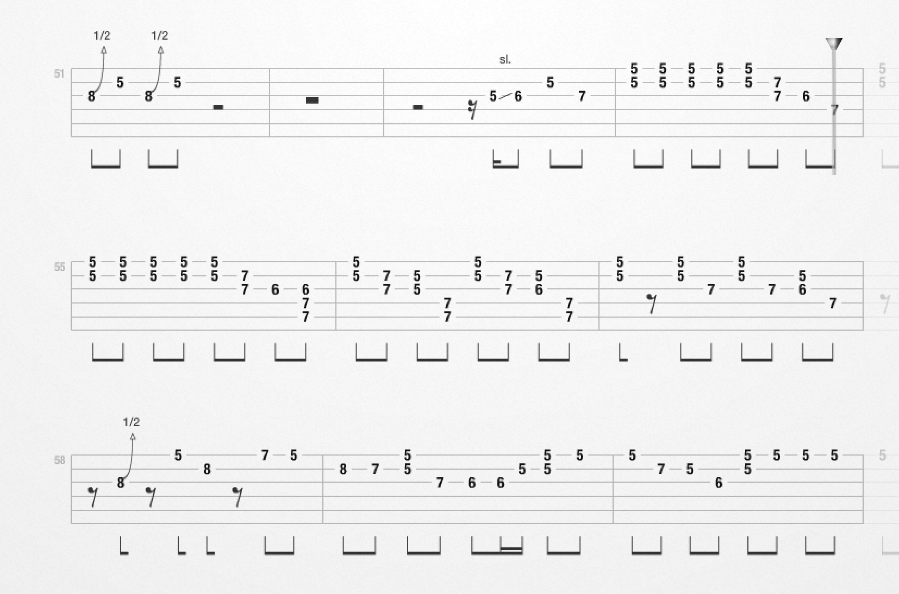

Summary. The Internet is full of information about a song: chords, lyrics, guitar tabs, YouTube instructions, YouTube performances. In addition one may have notes on paper. The aim of this note is to show how one can collect all this information in one document and compile this document in various versions and formats to fulfill various needs.
As example, we work with the song Johnny B Goode. We have collected
We write the document in plain text using the doconce tool to generate various formats (A4 PDF via LaTeX, A6 PDF via LaTeX, HTML). A very handy feature of doconce is the ability to insert if statements as part of the document in order to leave out lyrics, movies, etc. These if statements are written with syntax very close to the C and C++ preprocessors (which should be well known to C or C++ programmers). We introduce three variables (corresponding to macros in C and C++ preprocessors): LYRICS, TAB, and MOVIES. Lyrics are included if LYRICS is defined, guitar tabs are included if TAB is defined, and movies are included if MOVIES is defined.
The document containing songs needs a title, author, and date, written as follows in the doconce syntax in a plain text file using a plain text editor such as Notepad, Gedit, Emacs, or Vim:
TITLE: Collection of songs
AUTHOR: Hans Petter Langtangen
DATE: today
Each song starts with a headline with the name of the song. This headline is big and visible if we include lyrics, but in the compact format (recognized as LYRICS being undefined) the headline is just a paragraph heading. Right after comes the quick song overview in terms of intros, verses, chorus, etc. This expressed as follows in doconce:
# #ifdef LYRICS
# Big title
======= Johnny B Goode =======
# #else
# Compact title
__Johnny B Goode.__
# #endif
intro, verse, chorus, verse, chorus, verse with solo, chorus, verse, chorus.
Lines starting with # are comment lines and ignored in the output.
The next ingredient is a compact listing of the chords. Let us start with the word "Chords:" in boldface and the chords formatted as verbatim (mono font) text:
_Chords:_ `A D A E A`
Doconce uses underscores to indicate boldface, asterisks to indicate italic (emphasized) font, and backticks to specify verbatim inline text.
The next element of the song is the lyrics, usually with chords above. It is very important to typeset lyrics with chords as verbatim text, otherwise the chords will not match the lyrics at the right places! Blocks of verbatim text are surrounded by lines containing !bc ("begin code") and !ec ("end code"):
# #ifdef LYRICS
|bc
A
Way down in Louisiana down to New Orleans
Way back up in the woods among the evergreens
D
There stood a log cabin made of earth and wood
A
Where lived a country boy named Johnny B. Goode
E
Who never ever learned to read or write so well
A
But he could play a guitar just like he's ringin' a bell
A [Riff1]
Go Go
[Riff1]
Go Johnny Go Go
D [Riff1]
Go Johnny Go Go Go
A [Riff1]
Go Johnny Go Go
E [Riff1]
Go Johnny Go Go Go
A
Johnny B. Goode
# #endif
|ec
The next part of the song document consists of guitar tabs for the intro and the solo.
# #ifdef TAB
===== Guitar tabs =====
Tab Pro "tp.ultimate-guitar.com": "http://tp.ultimate-guitar.com/c/chuck_berry/johnny_b_goode_tab_online.html#3477d"
Tab taken from URL: "http://tablaturas.buanzo.com.ar/index.php?ident=6707407"
|bc
Intro (NOTE: Bb!)
NC Bb
e|----------5/6-6-6-5/6-6-6-6-6-6------------------------------------|
B|-------6--5/6-6-6-5/6-6-6-6-6-6-9-8-6-6----------------------------|
G|---6h7--------------------------------6h7--------------------------|
D|-8----------------------------------------8-6--8-8-8-8-8-8-8-8-----|
A|-----------------------------------------------8-8-8-8-8-8-8-8-----|
E|-------------------------------------------------------------------|
Eb
e|--------------------------------6----------------------------------|
B|-6-----6----------------6-------6-------6-------6-------6----------|
G|-6-7-8-6h7----8b9--8b10---8b10----8b10----8b10-----8b10------------|
D|------------8------------------------------------------------------|
A|-------------------------------------------------------------------|
E|-------------------------------------------------------------------|
|ec
# #endif
We can also insert figures of scores or tabs using doconce's FIGURE: command:
FIGURE: [Johnny_B_Goode_mid_solo.png, width=900] Mid solo.
The width parameter specifies the width in pixels of the figure in HTML output. All info about the figure must appear on a single line. The width parameter and the figure caption are optional. The result of the above FIGURE: command becomes
Figure 1: Mid solo.

The final part of this song is a list of YouTube movies. We first list instructional videos and then various performances by famous artists. A nice feature of doconce is that YouTube movies are automatically embedded in web pages. In the LaTeX output, YouTube movies appear with the YouTube URL is a link text (you can click on the link in PDF, but of course not in a printed version of the song document).
A movie is specified as follows in doconce:
MOVIE: [http://www.youtube.com/watch?v=WjtpaD3g_5k] Very slow instruction, part I.
MOVIE: [http://www.youtube.com/watch?v=t793lHAw33Y] Very slow instruction, part II.
That is, the keyword MOVIE: followed by the movie file or URL in brackets and then an optional movie caption. All this information must appear on a single line followed by a blank line. In the present example we write the following doconce code (headings of subsections are indicated by 5 = characters on each side of the title):
# #ifdef MOVIES
===== Guitar instructions =====
MOVIE: [http://www.youtube.com/watch?v=vSVIsGWrvvg] Good instruction.
MOVIE: [http://www.youtube.com/watch?v=4Hl4ueIk0zQ] Mostly backing riff.
MOVIE: [http://www.youtube.com/watch?v=WjtpaD3g_5k] Very slow instruction, part I.
MOVIE: [http://www.youtube.com/watch?v=t793lHAw33Y] Very slow instruction, part II.
# The movie caption can also be left out:
MOVIE: [http://www.youtube.com/watch?v=a4EDp5CxsLw]
===== Performances =====
MOVIE: [http://www.youtube.com/watch?v=S1i5coU-0_Q]
MOVIE: [http://www.youtube.com/watch?v=dYTqzcc-WNk] Chuck Berry, John Lennon.
MOVIE: [http://www.youtube.com/watch?v=5YcPtitpLkk] Chuck Berry, Julian Lennon, Keith Richards.
MOVIE: [http://www.youtube.com/watch?v=I8JULmUlGDA] Original recording.
MOVIE: [http://www.youtube.com/watch?v=27njFSSlLGY] Chuck Berry, 2009.
MOVIE: [http://www.youtube.com/watch?v=u8wzFzhr4G8] The Beatles.
MOVIE: [http://www.youtube.com/watch?v=HlPVoMHRtyg] Chuck Berry, Bruce Springsteen.
MOVIE: [http://www.youtube.com/watch?v=sYtc1Me8WUg] Jeff Beck, Carlos Santana, Steve Lukather.
MOVIE: [http://www.youtube.com/watch?v=q2BdQj0eSzU] Jimi Hendrix.
MOVIE: [http://www.youtube.com/watch?v=BG7UL9NfP8c] Elvis.
MOVIE: [http://www.youtube.com/watch?v=OA6MgIzgUj0] No need for guitars.
MOVIE: [http://www.youtube.com/watch?v=LDJ7ydnOeY0] Amateur band.
# #endif
That's it! It remains to translate the doconce text to LaTeX and HTML and to specify how lyrics and movies are included or left out of the document. First we make an HTML version for the web, including lyrics and movies. That is accomplished by running the Unix following command in a terminal window:
doconce format html songs.do.txt -DLYRICS -DMOVIES
The name of the doconce file is songs.do.txt, and -DLYRICS means that we define the preprocessor variable LYRICS to be true such that tests of the form #ifdef LYRICS become true.
The result of the above doconce command is a file songs.html that is immediately available for a web browser. LaTeX output requires some more steps:
doconce format latex songs.do.txt -DLYRICS -DMOVIES
doconce ptex2tex songs -DA4PAPER
pdflatex songs
The result is a PDF file songs.pdf. A6 paper can be specified by giving the option -DA6PAPER to doconce ptex2tex. The result of the latter command is a plain LaTeX file named songs.tex.
It is tedious to make all the different format so we may write a little Python script to automate the job of producing all the documents:
"""
Run doconce on howto.do.txt and produce
various versions in various formats.
"""
import os, shutil
output = []
file = 'songs'
formats = ['html', 'latex']
latex_formats = ['-DA4PAPER', '-DA6PAPER']
prepro_variables = ['', '-DLYRICS', '-DLYRICS -DTAB -DMOVIES']
for format in formats:
for prepro in prepro_variables:
if prepro == '':
filename = file + '_compact'
elif prepro == '-DLYRICS':
filename = file + '_lyrics'
else:
filename = file
if file != filename:
shutil.copy(file + '.do.txt', filename + '.do.txt')
cmd = 'doconce format %s %s %s' % (format, filename, prepro)
print cmd
os.system(cmd) # Run command
if format == 'latex':
for latex_format in latex_formats:
filename2 = filename + '_' + latex_format[2:4]
shutil.copy(filename + '.p.tex', filename2 + '.p.tex')
cmd = 'doconce ptex2tex %s %s' % (filename2, latex_format)
print cmd
os.system(cmd)
cmd = 'pdflatex %s; pdflatex %s' % \
(filename2, filename2, filename2)
os.system(cmd)
output.append(' * URL: "%s.pdf"' % filename2)
elif format == 'html':
output.append(' * URL: "%s.html"' % filename)
print '\n'.join(output)
When such a song is played in a band, different members of the band may want to annotate the document with their personal notes on how they play. Suppose John wants to make some comments which are of interest only to him. This is easily accomplished by adding a preprocessor variable, say John, and insert tests of the form
# #ifdef John
Here I play an A9 in the standard barre shape on the last beat before
moving to a D6-D7 on the 7th fret.
# #endif
John can now compile a version with lyrics, gitar tabs, and his annotations:
doconce format html songs -DLYRICS -DTAB -DJohn
Copying the result songs.html and figure files to Dropbox makes it easy to sync with an iPhone, iPad, or similar. Just click on the file in the Dropbox app on the handheld device and the web browser will show the document.